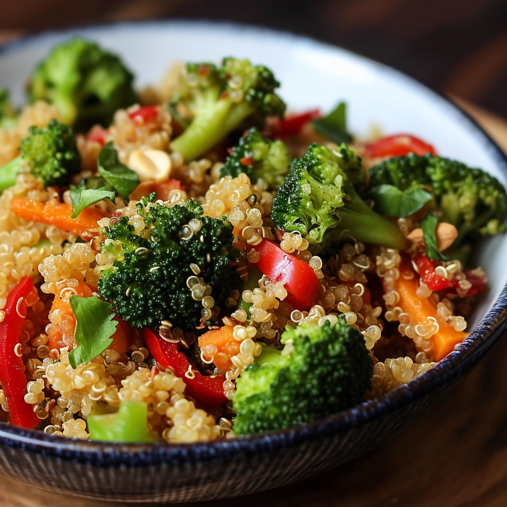

RECIPE
QUINOA VEGGIE STIR-FRY
30 MINS • EASY PREP • 3 SERVES

INSTRUCTIONS
COOK THE QUINOA
- Rinse quinoa under cold water using a fine-mesh sieve to remove bitterness.
- In a medium saucepan, bring 2 cups of water or vegetable broth to a boil. Add the quinoa and salt.
- Reduce the heat to low, cover, and simmer for about 15 minutes, or until the quinoa absorbs all the liquid.
- Remove from heat and let it sit, covered, for 5 minutes. Fluff with a fork and set aside.
PREPARE THE VEGETABLES
- While the quinoa cooks, wash and chop all vegetables as directed.
COOK THE STIR-FRY
- Heat 2 tbsp of olive oil or sesame oil in a large skillet or wok over medium-high heat.
- Add the diced onion and sauté for 2 minutes until softened.
- Stir in the garlic and ginger, cooking for 1 minute until fragrant.
- Add the broccoli, carrots, and bell peppers. Stir-fry for 3-4 minutes.
- Add the zucchini and snap peas, cooking for another 2-3 minutes until all vegetables are tender-crisp.
COMBINE QUINOA AND SAUCE
- Reduce the heat to low. Add the cooked quinoa to the skillet and mix gently to combine with the vegetables.
- Stir in soy sauce, rice vinegar or lime juice, sesame oil, and red pepper flakes. Toss until evenly coated.
GARNISH AND SERVE
- Transfer the quinoa veggie stir-fry to plates or bowls.
- Garnish with scallions, sesame seeds, or fresh cilantro as desired.
- Serve warm.
INGREDIENTS
- 1 cup quinoa (any variety)
- 2 cups water or vegetable broth
- 1/4 tsp salt
- 2 tbsp olive oil or sesame oil
- 1 medium onion, diced
- 3 garlic cloves, minced
- 1-inch piece of ginger, minced or grated
- 1 red bell pepper, thinly sliced
- 1 yellow bell pepper, thinly sliced
- 1 medium zucchini, sliced into half-moons
- 1 cup broccoli florets
- 1 large carrot, julienned or thinly sliced
- 1/2 cup snap peas or green beans, trimmed
- 2 tbsp low-sodium soy sauce (or tamari for gluten-free)
- 1 tbsp rice vinegar or fresh lime juice
- 1 tsp toasted sesame oil (optional, for added flavor)
- 1/2 tsp red pepper flakes (optional, for heat)
EQUPIMENT NEEDED FOR PREPERATION
- Medium saucepan with lid
- Large skillet or wok
- Cutting board and sharp knife
- Measuring cups and spoons
- Spatula or wooden spoon
NUTRITIONAL VALUE
Calories: 320
Protein: 10g
Total Fat: 13.5g
Carbohydrates: 60g
Cholesterol: 0mg
Sodium: 300mg
Note: Nutritional values are approximate and may vary based on specific ingredients and portion sizes.
Leave a Comment